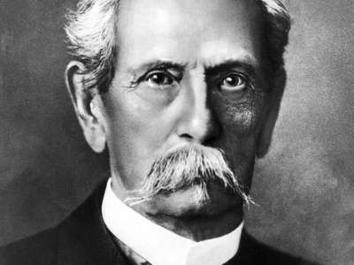
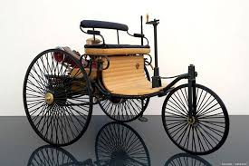

- 1844
Karl Benz was born Karl Friedrich Micheal Vailliant. on 25th Of November, 1844 in Muhlburg.
According to German law, the child acquired the name "Benz" by legal marriage of his parent.
When he was two years old, his father died of pneumonia, and his name was change to karl Friedrich Benz in remembrance of his father.
- 1853
Benz attended the local School in Karlsruhe, at the age of nine, he started at the scientifically oriented Lyceum.
Next he studied at Karlsruhe's polytechnical School under the instruction of Ferdinand Redtenbacher.
- 1860-1864
Benz had originally focused his studies on locksmithing. but he eventually followed his father's steps towards locomotive engineering.
On 30th September, 1860, at age 15, he passed the entrance exam for mechanical engineering for the Karlsruhe polytechnical school, and graduated at age 19.
- 1868
Following his formal education, Benz had seven years of professional training in several companies. In 1868 he went to Pforzheim to work for the bridge building company.
- 1871
At the age of twenty-seven, Karl Benz joined August Ritter in launching the Iron Foundry and mechanical Workshop in Mannheim. Later rename Factory for Machines for Sheet-Metal Working.
- 1872
On 20th Of July, Karl Benz got married to Bertha Ringer, and gave birth to five children in the Following sequence
- 1873 Eugen.
- 1874 Richard.
- 1877 Clara.
- 1882 Thilde.
- 1890 Ellen.
- 1878-1880
Despite the business misfortunes,
Karl Benz led in the development of new engines in the early factory he and his wife owned.
To get more revenue, in 1878 he began to work on new patents.
First, he concentrated on creating a reliable petrol two-stroke engine. Benz finished his two-stroke engine on 31 December 1879, and was granted a patent for it on 28 June 1880.

Karl Benz showed his real genius, however, through his successive inventions registered while designing what would become the production standard for his two-stroke engine.
Benz soon patented the speed regulation system, the ignition using sparks with battery, the spark plug, the carburetor, the clutch, the gear shift, and the water radiator.
- 1883
Creates Benz & Companie Rheinische Gasmotoren-Fabrik producing static gas engines
- 1885
Finishes designing and building his first automobile. He named it "Benz Patent Motorwagen"
- 1886
Recieves patent for the Motorwagon as DRP-37435: automobile fueled by gas
- 1888
begins selling the first commercially available automobile in history, the Benz Patent Motorwagen
- 1893
Creates a 2 passenger automobile called the Viktoria
- 1894
Introduces Vilo, the worlds first production automobile
- 1894
Vilo participates in worlds first automobile race
- 1894
Is inducted into the automotive hall of fame
- 1895
Designs the worlds first truck
- 1896
Designs the worlds first flat engine
- 1899
Benz & Cie becomes the largest automotive company in the world
- 1903
Retires from design management, remains a director at Benz & Cie
- 1909
Founds new company "C. Benz Sons" making automobiles and petrol engines
- 1912
Sells shares in Benz sons, continues to remain a director at Benz & Cie
- 1914
Is awarded an honorary doctorate by Karlsruhe University
- 1926
Merges Benz & Cie with Daimler Motoren Gesellschaft, creating the Daimler-Benz company, naming their automobile brand "Mercedes-Benz"
- 1929
Dies at home in Ladenburg at age of 84